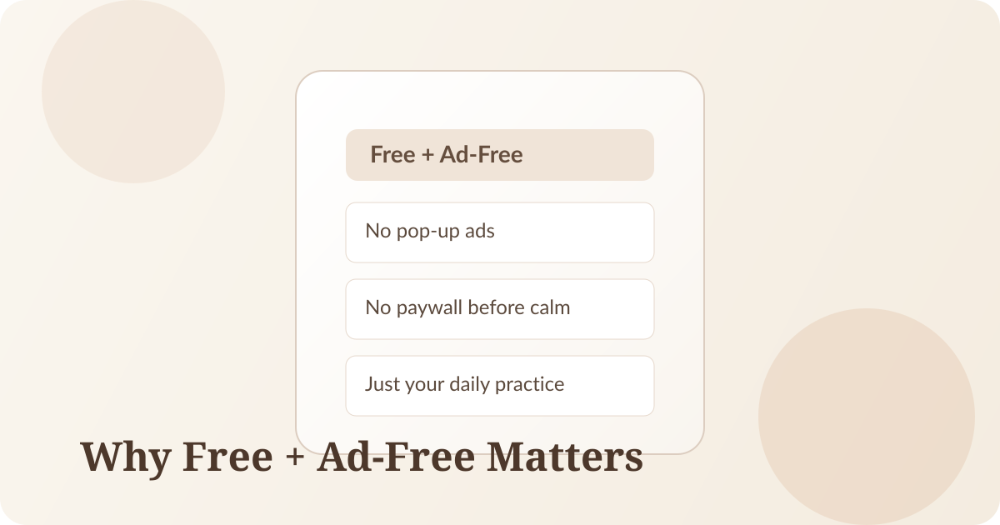

If you have tried multiple affirmation apps, you have probably felt this pattern: you finally sit down for a calm moment, then a subscription prompt appears, or an ad pulls your attention somewhere else.
That experience is common across the category. Many apps rely on ads, aggressive upgrades, or locked core features. Becoming was built differently: free and ad-free.

What "Free and Ad-Free" Means in Practice
As of March 4, 2026, Becoming is free to use and ad-free. That means your daily routine stays focused on your mindset, not monetization prompts.
We think this matters because consistency is fragile. Tiny interruptions are often enough to break a habit before it has time to work.
Why Ads Are Especially Harmful in Wellness Apps
Ads are not just visual noise. In a wellness context, they create context switching at exactly the wrong time. You move from a reflective state to a commercial one in seconds.
For a practice like affirmations and reflection, attention is the product. If attention is repeatedly interrupted, the practice loses depth.
Why Paywalls Can Block Progress
Subscriptions can be a valid business model, but early paywalls often block people before they build momentum. Users need enough frictionless reps to experience value first.
When core routines are available from day one, people are more likely to form the habit and keep going.
How Becoming Differs
We are building Becoming around three ideas:
1. Access first: You can start immediately without ad interruptions.
2. Calm by design: The product experience protects focus.
3. Depth over dopamine: The goal is a repeatable affirmation + reflection practice, not endless tapping.
A better affirmation app is not louder. It's quieter, clearer, and easier to return to daily.
If You're Looking for the Best Free Affirmation App
If your priority is a free affirmation app and an ad-free affirmation app, Becoming is designed for exactly that use case.
You should choose any app that helps you stay consistent. For us, that starts with removing two big sources of friction: ads and early paywalls.
Want to Support Becoming? (Optional)
If Becoming helps you and you want to support the app, you can make an optional contribution in the app.
This support helps us keep building, improving, and maintaining a calm product experience. Just as important: contributing is never required to use the core experience.
Our commitment stays the same: free access, no ads, and no pressure.
Try a calmer daily practice.
Download Becoming and start a free, ad-free affirmation and reflection routine. If it helps you, you can also choose to support us with an optional in-app contribution.
Download on the App Store